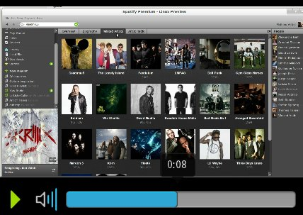
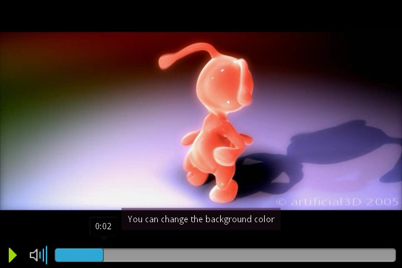

{kind=link}
Table Of Contents
Video player¶
New in version 1.2.0.
The video player widget can be used to play video and let the user control the play/pausing, volume and position. The widget cannot be customized much because of the complex assembly of numerous base widgets.
Annotations¶
If you want to display text at a specific time and for a certain duration, consider annotations. An annotation file has a ”.jsa” extension. The player will automatically load the associated annotation file if it exists.
An annotation file is JSON-based, providing a list of label dictionary items. The key and value must match one of the VideoPlayerAnnotation items. For example, here is a short version of a jsa file that you can find in examples/widgets/softboy.jsa:
[
{"start": 0, "duration": 2,
"text": "This is an example of annotation"},
{"start": 2, "duration": 2,
"bgcolor": [0.5, 0.2, 0.4, 0.5],
"text": "You can change the background color"}
]
For our softboy.avi example, the result will be:
If you want to experiment with annotation files, test with:
python -m kivy.uix.videoplayer examples/widgets/softboy.avi
Fullscreen¶
The video player can play the video in fullscreen, if VideoPlayer.allow_fullscreen is activated by a double-tap on the video. By default, if the video is smaller than the Window, it will be not stretched.
You can allow stretching by passing custom options to a VideoPlayer instance:
player = VideoPlayer(source='myvideo.avi', state='play',
options={'allow_stretch': True})
End-of-stream behavior¶
You can specify what happens when the video has finished playing by passing an eos (end of stream) directive to the underlying VideoBase class. eos can be one of ‘stop’, ‘pause’ or ‘loop’ and defaults to ‘stop’. For example, in order to loop the video:
player = VideoPlayer(source='myvideo.avi', state='play',
options={'eos': 'loop'})
Note
The eos property of the VideoBase class is a string specifying the end-of-stream behavior. This property differs from the eos properties of the VideoPlayer and Video classes, whose eos property is simply a boolean indicating that the end of the file has been reached.
- class kivy.uix.videoplayer.VideoPlayer(**kwargs)[source]¶
Bases: kivy.uix.gridlayout.GridLayout
VideoPlayer class. See module documentation for more information.
- allow_fullscreen¶
By default, you can double-tap on the video to make it fullscreen. Set this property to False to prevent this behavior.
allow_fullscreen is a BooleanProperty defaults to True.
- annotations¶
If set, it will be used for reading annotations box.
annotations is a StringProperty and defaults to ‘’.
- duration¶
Duration of the video. The duration defaults to -1 and is set to the real duration when the video is loaded.
duration is a NumericProperty and defaults to -1.
- fullscreen¶
Switch to fullscreen view. This should be used with care. When activated, the widget will remove itself from its parent, remove all children from the window and will add itself to it. When fullscreen is unset, all the previous children are restored and the widget is restored to its previous parent.
Warning
The re-add operation doesn’t care about the index position of it’s children within the parent.
fullscreen is a BooleanProperty and defaults to False.
- image_loading¶
Image filename used when the video is loading.
image_loading is a StringProperty and defaults to ‘data/images/image-loading.gif’.
- image_overlay_play¶
Image filename used to show a “play” overlay when the video has not yet started.
image_overlay_play is a StringProperty and defaults to ‘atlas://data/images/defaulttheme/player-play-overlay’.
- image_pause¶
Image filename used for the “Pause” button.
image_pause is a StringProperty and defaults to ‘atlas://data/images/defaulttheme/media-playback-pause’.
- image_play¶
Image filename used for the “Play” button.
image_play is a StringProperty and defaults to ‘atlas://data/images/defaulttheme/media-playback-start’.
- image_stop¶
Image filename used for the “Stop” button.
image_stop is a StringProperty and defaults to ‘atlas://data/images/defaulttheme/media-playback-stop’.
- image_volumehigh¶
Image filename used for the volume icon when the volume is high.
image_volumehigh is a StringProperty and defaults to ‘atlas://data/images/defaulttheme/audio-volume-high’.
- image_volumelow¶
Image filename used for the volume icon when the volume is low.
image_volumelow is a StringProperty and defaults to ‘atlas://data/images/defaulttheme/audio-volume-low’.
- image_volumemedium¶
Image filename used for the volume icon when the volume is medium.
image_volumemedium is a StringProperty and defaults to ‘atlas://data/images/defaulttheme/audio-volume-medium’.
- image_volumemuted¶
Image filename used for the volume icon when the volume is muted.
image_volumemuted is a StringProperty and defaults to ‘atlas://data/images/defaulttheme/audio-volume-muted’.
- options¶
Optional parameters can be passed to a Video instance with this property.
options a DictProperty and defaults to {}.
- play¶
Deprecated since version 1.4.0: Use state instead.
Boolean, indicates whether the video is playing or not. You can start/stop the video by setting this property:
# start playing the video at creation video = VideoPlayer(source='movie.mkv', play=True) # create the video, and start later video = VideoPlayer(source='movie.mkv') # and later video.play = True
play is a BooleanProperty and defaults to False.
- position¶
Position of the video between 0 and duration. The position defaults to -1 and is set to the real position when the video is loaded.
position is a NumericProperty and defaults to -1.
- seek(percent)[source]¶
Change the position to a percentage of the duration. Percentage must be a value between 0-1.
Warning
Calling seek() before video is loaded has no effect.
- source¶
Source of the video to read.
source is a StringProperty and defaults to ‘’.
Changed in version 1.4.0.
- state¶
String, indicates whether to play, pause, or stop the video:
# start playing the video at creation video = VideoPlayer(source='movie.mkv', state='play') # create the video, and start later video = VideoPlayer(source='movie.mkv') # and later video.state = 'play'
state is an OptionProperty and defaults to ‘play’.
- thumbnail¶
Thumbnail of the video to show. If None, VideoPlayer will try to find the thumbnail from the source + ‘.png’.
thumbnail a StringProperty and defaults to ‘’.
Changed in version 1.4.0.
- volume¶
Volume of the video in the range 0-1. 1 means full volume and 0 means mute.
volume is a NumericProperty and defaults to 1.
- class kivy.uix.videoplayer.VideoPlayerAnnotation(**kwargs)[source]¶
Bases: kivy.uix.label.Label
Annotation class used for creating annotation labels.
Additional keys are available:
- bgcolor: [r, g, b, a] - background color of the text box
- bgsource: ‘filename’ - background image used for the background text box
- border: (n, e, s, w) - border used for the background image
- duration¶
Duration of the annotation.
duration is a NumericProperty and defaults to 1.
- start¶
Start time of the annotation.
start is a NumericProperty and defaults to 0.